Estadísticas del servidor Web de dalpedidos.com
Estadísticas del servidor Web de dalpedidos.com
Programa iniciado a las Jue/01/Ago/2019 10:02 am.
Análisis de peticiones del Lun/29/Jul/2019 4:40 pm al Jue/01/Ago/2019 8:52 am (2.67 días).
Estadísticas del servidor Web de dalpedidos.comPrograma iniciado a las Jue/01/Ago/2019 10:02 am.
Análisis de peticiones del Lun/29/Jul/2019 4:40 pm al Jue/01/Ago/2019 8:52 am (2.67 días).
(Ir a: Arriba | Resumen general | Informe mensual | Resumen diario | Resumen horario | Informe de dominios | Informe de organización | Informe de remitentes redirecionados | Informe de errores de remitentes | Informe de sitios remitentes | Informe de navegadores | Resumen de navegadores | Informe de Sistemas Operativos | Informe de códigos de estado | Informe de tamaño de archivos | Informe de Tipos de Archivo | Informe de Directorios | Informe de peticiones)
Peticiones exitosas: 1,402
Promedio de peticiones exitosas por día: 523
Peticiones exitosas por página: 227
Promedio de peticiones exitosas por página por día: 84
Peticiones no logradas: 251
Peticiones redireccionadas: 287
Archivos diferentes solicitados: 170
Sistemas diferentes atendidos: 124
Líneas no válidas en el archivo de registros: 5
Transferencia total: 51.61 megabytes
Promedio de transferencia por día: 19.29 megabytes
(Ir a: Arriba | Resumen general | Informe mensual | Resumen diario | Resumen horario | Informe de dominios | Informe de organización | Informe de remitentes redirecionados | Informe de errores de remitentes | Informe de sitios remitentes | Informe de navegadores | Resumen de navegadores | Informe de Sistemas Operativos | Informe de códigos de estado | Informe de tamaño de archivos | Informe de Tipos de Archivo | Informe de Directorios | Informe de peticiones)
Cada unidad ( ) representa 6 peticiones por páginas o fracción.
) representa 6 peticiones por páginas o fracción.
| mes | No. pet. | Págs. | |
|---|---|---|---|
| Jul 2019 | 1382 | 222 |   |
| Ago 2019 | 20 | 5 | |
Mes de mayor tráfico: Jul 2019 (222 peticiones por páginas).
(Ir a: Arriba | Resumen general | Informe mensual | Resumen diario | Resumen horario | Informe de dominios | Informe de organización | Informe de remitentes redirecionados | Informe de errores de remitentes | Informe de sitios remitentes | Informe de navegadores | Resumen de navegadores | Informe de Sistemas Operativos | Informe de códigos de estado | Informe de tamaño de archivos | Informe de Tipos de Archivo | Informe de Directorios | Informe de peticiones)
Cada unidad () representa 3 peticiones por páginas o fracción.
| día | No. pet. | Págs. | |
|---|---|---|---|
| Dom | 0 | 0 | |
| Lun | 27 | 15 | |
| Mar | 435 | 81 |    |
| Mié | 920 | 126 | |
| Jue | 20 | 5 | |
| Vie | 0 | 0 | |
| Sáb | 0 | 0 |
(Ir a: Arriba | Resumen general | Informe mensual | Resumen diario | Resumen horario | Informe de dominios | Informe de organización | Informe de remitentes redirecionados | Informe de errores de remitentes | Informe de sitios remitentes | Informe de navegadores | Resumen de navegadores | Informe de Sistemas Operativos | Informe de códigos de estado | Informe de tamaño de archivos | Informe de Tipos de Archivo | Informe de Directorios | Informe de peticiones)
Cada unidad () representa 1 petición de una página.
| hr | No. pet. | Págs. | |
|---|---|---|---|
| 0 | 198 | 10 | |
| 1 | 109 | 16 | |
| 2 | 135 | 13 | |
| 3 | 115 | 13 | |
| 4 | 27 | 10 | |
| 5 | 30 | 10 | |
| 6 | 22 | 14 | |
| 7 | 13 | 8 | |
| 8 | 5 | 3 | |
| 9 | 2 | 2 | |
| 10 | 14 | 7 | |
| 11 | 26 | 2 | |
| 12 | 22 | 1 | |
| 13 | 97 | 4 | |
| 14 | 45 | 17 | |
| 15 | 20 | 14 | |
| 16 | 37 | 8 | |
| 17 | 20 | 7 | |
| 18 | 80 | 18 | |
| 19 | 56 | 9 | |
| 20 | 29 | 5 | |
| 21 | 77 | 12 | |
| 22 | 190 | 20 | |
| 23 | 33 | 4 | |
(Ir a: Arriba | Resumen general | Informe mensual | Resumen diario | Resumen horario | Informe de dominios | Informe de organización | Informe de remitentes redirecionados | Informe de errores de remitentes | Informe de sitios remitentes | Informe de navegadores | Resumen de navegadores | Informe de Sistemas Operativos | Informe de códigos de estado | Informe de tamaño de archivos | Informe de Tipos de Archivo | Informe de Directorios | Informe de peticiones)
Listado de los dominios, ordenados por cantidad de tráfico.
| No. pet. | %bytes | dominio |
|---|---|---|
| 1402 | 100% | [direcciones numéricas sin resolver] |
(Ir a: Arriba | Resumen general | Informe mensual | Resumen diario | Resumen horario | Informe de dominios | Informe de organización | Informe de remitentes redirecionados | Informe de errores de remitentes | Informe de sitios remitentes | Informe de navegadores | Resumen de navegadores | Informe de Sistemas Operativos | Informe de códigos de estado | Informe de tamaño de archivos | Informe de Tipos de Archivo | Informe de Directorios | Informe de peticiones)
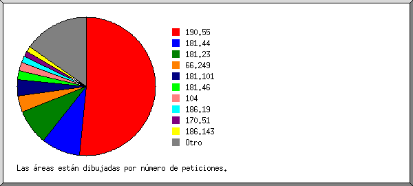
Listado de las 20 primeras organizaciones por número de peticiones, ordenadas por número de peticiones.
| No. pet. | %bytes | organización |
|---|---|---|
| 723 | 18.88% | 190.55 |
| 127 | 8.97% | 181.44 |
| 116 | 7.55% | 181.23 |
| 54 | 15.31% | 66.249 |
| 53 | 2.71% | 181.101 |
| 30 | 1.22% | 181.46 |
| 27 | 1.15% | 104 |
| 21 | 3.33% | 186.19 |
| 19 | 2.43% | 170.51 |
| 17 | 4.40% | 186.143 |
| 13 | 3.09% | 42 |
| 12 | 5.73% | 185.130 |
| 12 | 1.60% | 82 |
| 11 | 2.92% | 65.154 |
| 9 | 2.21% | 181.230 |
| 9 | 1.51% | 35 |
| 8 | 0.05% | 180.169 |
| 7 | 0.03% | 58 |
| 7 | 2.18% | 179.36 |
| 6 | 1.04% | 18 |
| 121 | 13.68% | [no listadas: 52 organizaciones] |
(Ir a: Arriba | Resumen general | Informe mensual | Resumen diario | Resumen horario | Informe de dominios | Informe de organización | Informe de remitentes redirecionados | Informe de errores de remitentes | Informe de sitios remitentes | Informe de navegadores | Resumen de navegadores | Informe de Sistemas Operativos | Informe de códigos de estado | Informe de tamaño de archivos | Informe de Tipos de Archivo | Informe de Directorios | Informe de peticiones)
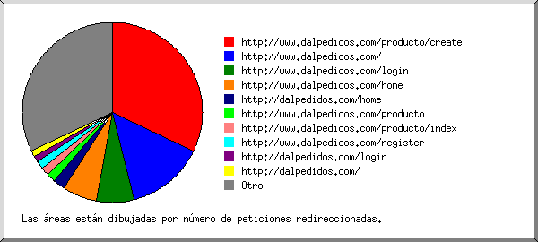
Listado de los 30 primeros URLs remitentes por número de peticiones redireccionadas, ordenados por número de peticiones redireccionadas.
(Ir a: Arriba | Resumen general | Informe mensual | Resumen diario | Resumen horario | Informe de dominios | Informe de organización | Informe de remitentes redirecionados | Informe de errores de remitentes | Informe de sitios remitentes | Informe de navegadores | Resumen de navegadores | Informe de Sistemas Operativos | Informe de códigos de estado | Informe de tamaño de archivos | Informe de Tipos de Archivo | Informe de Directorios | Informe de peticiones)
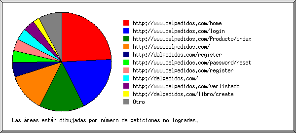
Listado de los URLs de remitentes, ordenados por número de peticiones no logradas.
(Ir a: Arriba | Resumen general | Informe mensual | Resumen diario | Resumen horario | Informe de dominios | Informe de organización | Informe de remitentes redirecionados | Informe de errores de remitentes | Informe de sitios remitentes | Informe de navegadores | Resumen de navegadores | Informe de Sistemas Operativos | Informe de códigos de estado | Informe de tamaño de archivos | Informe de Tipos de Archivo | Informe de Directorios | Informe de peticiones)
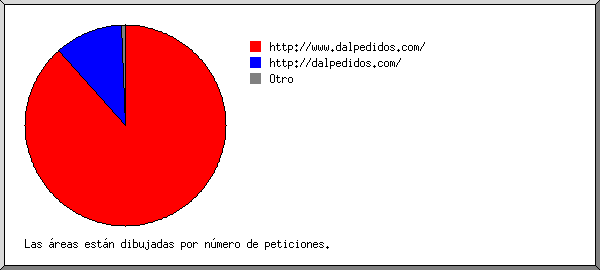
Listado de los sitios remitentes, ordenados por número de peticiones.
| No. pet. | sitio |
|---|---|
| 1032 | http://www.dalpedidos.com/ |
| 130 | http://dalpedidos.com/ |
| 3 | http://www.baidu.com/ |
| 1 | http://www.bing.com/ |
| 1 | http://www.google.com/ |
| 1 | android-app://com.google.android.googlequicksearchbox/ |
(Ir a: Arriba | Resumen general | Informe mensual | Resumen diario | Resumen horario | Informe de dominios | Informe de organización | Informe de remitentes redirecionados | Informe de errores de remitentes | Informe de sitios remitentes | Informe de navegadores | Resumen de navegadores | Informe de Sistemas Operativos | Informe de códigos de estado | Informe de tamaño de archivos | Informe de Tipos de Archivo | Informe de Directorios | Informe de peticiones)
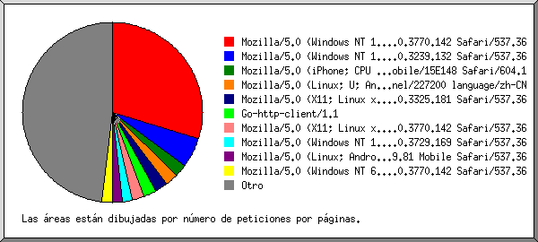
Listado de los 40 primeros navegadores por número de peticiones por páginas, ordenados por número de peticiones por páginas.
| No. pet. | Págs. | Navegador |
|---|---|---|
| 811 | 66 | Mozilla/5.0 (Windows NT 10.0; Win64; x64) AppleWebKit/537.36 (KHTML, like Gecko) Chrome/75.0.3770.142 Safari/537.36 |
| 19 | 12 | Mozilla/5.0 (Windows NT 10.0; Win64; x64) AppleWebKit/537.36 (KHTML, like Gecko) Chrome/63.0.3239.132 Safari/537.36 |
| 57 | 5 | Mozilla/5.0 (iPhone; CPU iPhone OS 12_4 like Mac OS X) AppleWebKit/605.1.15 (KHTML, like Gecko) Version/12.1.2 Mobile/15E148 Safari/604.1 |
| 14 | 5 | Mozilla/5.0 (Linux; U; Android 8.1.0; zh-CN; EML-AL00 Build/HUAWEIEML-AL00) AppleWebKit/537.36 (KHTML, like Gecko) Version/4.0 Chrome/57.0.2987.108 baidu.sogo.uc.UCBrowser/11.9.4.974 UWS/2.13.1.48 Mobile Safari/537.36 AliApp(DingTalk/4.5.11) com.alibaba.android.rimet/10487439 Channel/227200 language/zh-CN |
| 5 | 5 | Mozilla/5.0 (X11; Linux x86_64) AppleWebKit/537.36 (KHTML, like Gecko) Chrome/65.0.3325.181 Safari/537.36 |
| 5 | 5 | Go-http-client/1.1 |
| 34 | 5 | Mozilla/5.0 (X11; Linux x86_64) AppleWebKit/537.36 (KHTML, like Gecko) Chrome/75.0.3770.142 Safari/537.36 |
| 4 | 4 | Mozilla/5.0 (Windows NT 10.0; Win64; x64) AppleWebKit/537.36 (KHTML, like Gecko) Chrome/74.0.3729.169 Safari/537.36 |
| 4 | 4 | Mozilla/5.0 (Linux; Android 6.0; Nexus 5 Build/MRA58N) AppleWebKit/537.36 (KHTML, like Gecko) Chrome/58.0.3029.81 Mobile Safari/537.36 |
| 62 | 4 | Mozilla/5.0 (Windows NT 6.1; Win64; x64) AppleWebKit/537.36 (KHTML, like Gecko) Chrome/75.0.3770.142 Safari/537.36 |
| 6 | 3 | Mozilla/5.0 (Windows NT 6.1; Win64; x64) AppleWebKit/537.36 (KHTML, like Gecko) Chrome/73.0.3683.75 Safari/537.36 |
| 3 | 3 | Mozilla/5.0 (X11; Ubuntu; Linux x86_64; rv:58.0) Gecko/20100101 Firefox/58.0 |
| 3 | 3 | Mozilla/5.0 (iPhone; CPU iPhone OS 11_0 like Mac OS X) AppleWebKit/604.1.38 (KHTML, like Gecko) Version/11.0 Mobile/15A372 Safari/604.1 |
| 3 | 3 | python-requests/2.18.4 |
| 3 | 3 | Mozilla/5.0 (Windows NT 6.1; WOW64; rv:41.0) Gecko/20100101 Firefox/41.0 |
| 4 | 3 | Mozilla/5.0 (Windows NT 6.3; WOW64; rv:49.0) Gecko/20100101 Firefox/49.0 |
| 2 | 2 | Mozilla/5.0 (iPhone; CPU iPhone OS 12_2 like Mac OS X) AppleWebKit/605.1.15 (KHTML, like Gecko) Version/12.1 Mobile/15E148 Safari/604.1 |
| 2 | 2 | Mozilla/5.1 (Windows NT 6.1; WOW64; rv:36.0) Gecko/20100101 Firefox/36.0 |
| 17 | 2 | Mozilla/5.0 (Linux; Android 8.1.0; Moto G (5S) Build/OPPS28.65-37-7-6) AppleWebKit/537.36 (KHTML, like Gecko) Chrome/66.0.3359.126 Mobile Safari/537.36 |
| 7 | 2 | Mozilla/5.0 (Linux; U; Android 8.1.0; SM-J710MN Build/M1AJQ; wv) AppleWebKit/537.36 (KHTML, like Gecko) Version/4.0 Chrome/75.0.3770.143 Mobile Safari/537.36 OPR/43.3.2254.141404 |
| 24 | 2 | Mozilla/5.0 (Linux; Android 9; SAMSUNG SM-A605GN Build/PPR1.180610.011) AppleWebKit/537.36 (KHTML, like Gecko) SamsungBrowser/9.4 Chrome/67.0.3396.87 Mobile Safari/537.36 |
| 6 | 2 | Mozilla/5.0 (iPhone; CPU iPhone OS 10_3 like Mac OS X) AppleWebKit/602.1.50 (KHTML |
| 2 | 2 | Mozilla/5.0 (Linux; Android 4.2.1; en-us; Nexus 5 Build/JOP40D) AppleWebKit/535.19 (KHTML, like Gecko; googleweblight) Chrome/38.0.1025.166 Mobile Safari/535.19 |
| 6 | 2 | Mozilla/5.0 (Linux; Android 6.0.1; Nexus 5 Build/MRA58N) AppleWebKit/537.36 (KHTML, like Gecko) Chrome/74.0.3694.0 Mobile Safari/537.36 Chrome-Lighthouse |
| 3 | 2 | Mozilla/5.0 (Windows NT 5.1) AppleWebKit/537.36 (KHTML, like Gecko) Chrome/49.0.2623.112 Safari/537.36 |
| 6 | 2 | Mozilla/5.0 (X11; Linux x86_64) AppleWebKit/537.36 (KHTML, like Gecko) Chrome/74.0.3694.0 Safari/537.36 Chrome-Lighthouse |
| 2 | 2 | Mozilla/5.0 (Windows NT 10.0; Win64; x64) AppleWebKit/537.36 (KHTML, like Gecko) Chrome/75.0.3770.100 Safari/537.36 |
| 2 | 2 | Mozilla/5.0 (Macintosh; Intel Mac OS X 10_14_3) AppleWebKit/537.36 (KHTML, like Gecko) Chrome/72.0.3626.121 Safari/537.36 |
| 5 | 2 | Mozilla/5.0 (Linux; U; Android 4.0.2; en-us; Galaxy Nexus Build/ICL53F) AppleWebKit/534.30 (KHTML, like Gecko) Version/4.0 Mobile Safari/534.30 |
| 19 | 2 | Mozilla/5.0 (Windows NT 10.0; Win64; x64) AppleWebKit/537.36 (KHTML, like Gecko) Chrome/64.0.3282.140 Safari/537.36 Edge/17.17134 |
| 6 | 2 | CheckMarkNetwork/1.0 (+http://www.checkmarknetwork.com/spider.html) |
| 2 | 2 | Mozilla/5.0 (Windows NT 6.3; Win64; x64) AppleWebKit/537.36 (KHTML, like Gecko) Chrome/73.0.3683.86 Safari/537.36 |
| 2 | 2 | Mozilla/5.0 (Windows NT 10.0; Win64; x64) AppleWebKit/537.36 (KHTML, like Gecko) Chrome/61.0.3163.100 Safari/537.36 |
| 20 | 2 | Mozilla/5.0 (Linux; Android 8.1.0; SAMSUNG SM-G610M Build/M1AJQ) AppleWebKit/537.36 (KHTML, like Gecko) SamsungBrowser/9.4 Chrome/67.0.3396.87 Mobile Safari/537.36 |
| 2 | 2 | Mozilla/5.0 (Linux; U; Android 4.4.2; en-us; SCH-I535 Build/KOT49H) AppleWebKit/534.30 (KHTML, like Gecko) Version/4.0 Mobile Safari/534.30 |
| 2 | 2 | Mozilla/5.0 (Windows NT 10.0; Win64; x64) AppleWebKit/537.36 (KHTML like Gecko) Chrome/51.0.2704.79 Safari/537.36 Edge/14.14931 |
| 2 | 2 | Mozilla/5.0 (Windows NT 6.1; WOW64) AppleWebKit/534.24 (KHTML, like Gecko) Chrome/11.0.696.71 Safari/534.24 |
| 10 | 2 | Mozilla/5.0 (Unknown; Linux x86_64) AppleWebKit/538.1 (KHTML, like Gecko) PhantomJS/2.1.1 Safari/538.1 |
| 12 | 2 | Mozilla/5.0 (Windows NT 10.0; Win64; x64) AppleWebKit/537.36 (KHTML, like Gecko) Chrome/52.0.2743.116 Safari/537.36 Edge/15.15063 |
| 7 | 1 | Mozilla/5.0 (Linux; Android 8.0.0; SM-A720F) AppleWebKit/537.36 (KHTML, like Gecko) Chrome/75.0.3770.143 Mobile Safari/537.36 |
| 192 | 42 | [no listados: 55 Navegadores] |
(Ir a: Arriba | Resumen general | Informe mensual | Resumen diario | Resumen horario | Informe de dominios | Informe de organización | Informe de remitentes redirecionados | Informe de errores de remitentes | Informe de sitios remitentes | Informe de navegadores | Resumen de navegadores | Informe de Sistemas Operativos | Informe de códigos de estado | Informe de tamaño de archivos | Informe de Tipos de Archivo | Informe de Directorios | Informe de peticiones)
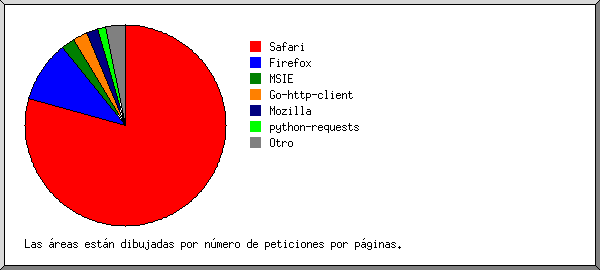
Listado de los navegadores que representan, por lo menos, 1 petición de una página, ordenados por número de peticiones por páginas.
| no. | No. pet. | Págs. | Navegador |
|---|---|---|---|
| 1 | 1309 | 176 | Safari |
| 1226 | 156 | Safari/537 | |
| 62 | 10 | Safari/604 | |
| 9 | 6 | Safari/534 | |
| 10 | 2 | Safari/538 | |
| 2 | 2 | Safari/535 | |
| 2 | 36 | 22 | Firefox |
| 3 | 3 | Firefox/41 | |
| 3 | 3 | Firefox/36 | |
| 4 | 3 | Firefox/49 | |
| 3 | 3 | Firefox/58 | |
| 1 | 1 | Firefox/12 | |
| 1 | 1 | Firefox/40 | |
| 1 | 1 | Firefox/60 | |
| 1 | 1 | Firefox/51 | |
| 1 | 1 | Firefox/53 | |
| 2 | 1 | Firefox/64 | |
| 3 | 11 | 5 | MSIE |
| 4 | 3 | MSIE/9 | |
| 6 | 2 | MSIE/8 | |
| 4 | 5 | 5 | Go-http-client |
| 5 | 5 | Go-http-client/1 | |
| 5 | 8 | 4 | Mozilla |
| 6 | 3 | 3 | python-requests |
| 3 | 3 | python-requests/2 | |
| 7 | 6 | 2 | CheckMarkNetwork |
| 6 | 2 | CheckMarkNetwork/1 | |
| 8 | 5 | 1 | Netscape |
| 9 | 1 | 1 | curl |
| 1 | 1 | curl/7 | |
| 10 | 1 | 1 | Wget |
| 1 | 1 | Wget/1 | |
| 11 | 1 | 1 | Validator.nu |
| 1 | 1 | Validator.nu/LV | |
| 12 | 1 | 1 | Apache-HttpClient |
| 1 | 1 | Apache-HttpClient/4 | |
| 10 | 0 | [no listados: 4 Navegadores] |
(Ir a: Arriba | Resumen general | Informe mensual | Resumen diario | Resumen horario | Informe de dominios | Informe de organización | Informe de remitentes redirecionados | Informe de errores de remitentes | Informe de sitios remitentes | Informe de navegadores | Resumen de navegadores | Informe de Sistemas Operativos | Informe de códigos de estado | Informe de tamaño de archivos | Informe de Tipos de Archivo | Informe de Directorios | Informe de peticiones)
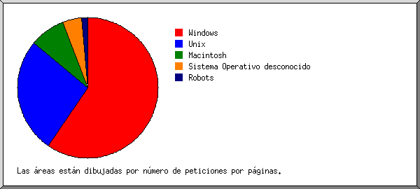
Listado de los sistemas operativos, ordenados por número de peticiones por páginas.
| no. | No. pet. | Págs. | SO |
|---|---|---|---|
| 1 | 1044 | 132 | Windows |
| 935 | 98 | Windows NT | |
| 101 | 30 | Windows desconocido | |
| 8 | 4 | Windows XP | |
| 2 | 242 | 59 | Unix |
| 242 | 59 | Linux | |
| 3 | 81 | 18 | Macintosh |
| 4 | 23 | 10 | Sistema Operativo desconocido |
| 5 | 7 | 3 | Robots |
(Ir a: Arriba | Resumen general | Informe mensual | Resumen diario | Resumen horario | Informe de dominios | Informe de organización | Informe de remitentes redirecionados | Informe de errores de remitentes | Informe de sitios remitentes | Informe de navegadores | Resumen de navegadores | Informe de Sistemas Operativos | Informe de códigos de estado | Informe de tamaño de archivos | Informe de Tipos de Archivo | Informe de Directorios | Informe de peticiones)
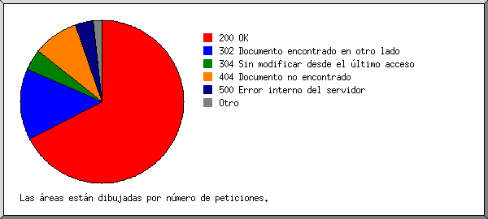
Listado de los códigos de estado, por orden numérico.
| No. pet. | cód. de estado |
|---|---|
| 1307 | 200 OK |
| 13 | 206 Contenido parcial |
| 13 | 301 Documento desplazado permanentemente |
| 274 | 302 Documento encontrado en otro lado |
| 82 | 304 Sin modificar desde el último acceso |
| 175 | 404 Documento no encontrado |
| 6 | 4xx [Varios errores cliente/usuario] |
| 70 | 500 Error interno del servidor |
(Ir a: Arriba | Resumen general | Informe mensual | Resumen diario | Resumen horario | Informe de dominios | Informe de organización | Informe de remitentes redirecionados | Informe de errores de remitentes | Informe de sitios remitentes | Informe de navegadores | Resumen de navegadores | Informe de Sistemas Operativos | Informe de códigos de estado | Informe de tamaño de archivos | Informe de Tipos de Archivo | Informe de Directorios | Informe de peticiones)
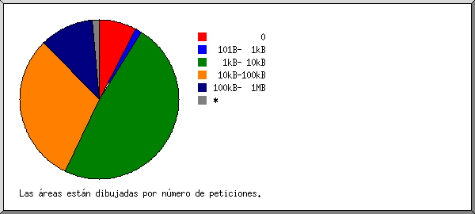
| tamaño | No. pet. | %bytes |
|---|---|---|
| 0 | 107 | |
| 1B- 10B | 7 | |
| 11B- 100B | 11 | |
| 101B- 1kB | 18 | 0.02% |
| 1kB- 10kB | 675 | 5.81% |
| 10kB-100kB | 428 | 12.32% |
| 100kB- 1MB | 156 | 81.85% |
(Ir a: Arriba | Resumen general | Informe mensual | Resumen diario | Resumen horario | Informe de dominios | Informe de organización | Informe de remitentes redirecionados | Informe de errores de remitentes | Informe de sitios remitentes | Informe de navegadores | Resumen de navegadores | Informe de Sistemas Operativos | Informe de códigos de estado | Informe de tamaño de archivos | Informe de Tipos de Archivo | Informe de Directorios | Informe de peticiones)
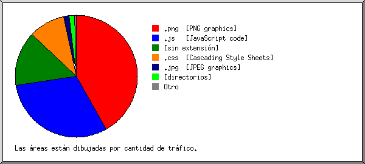
Listado de las extensiones que representan, por lo menos, 0.1% del tráfico, ordenadas por cantidad de tráfico.
| No. pet. | %bytes | extensión |
|---|---|---|
| 126 | 41.82% | .png [PNG graphics] |
| 64 | 30.64% | .js [JavaScript code] |
| 859 | 14.65% | [sin extensión] |
| 54 | 9.66% | .css [Cascading Style Sheets] |
| 9 | 1.48% | .jpg [JPEG graphics] |
| 227 | 1.42% | [directorios] |
| 43 | 0.32% | .ico |
| 20 | 0.01% | [no listadas: 3 extensiones] |
(Ir a: Arriba | Resumen general | Informe mensual | Resumen diario | Resumen horario | Informe de dominios | Informe de organización | Informe de remitentes redirecionados | Informe de errores de remitentes | Informe de sitios remitentes | Informe de navegadores | Resumen de navegadores | Informe de Sistemas Operativos | Informe de códigos de estado | Informe de tamaño de archivos | Informe de Tipos de Archivo | Informe de Directorios | Informe de peticiones)
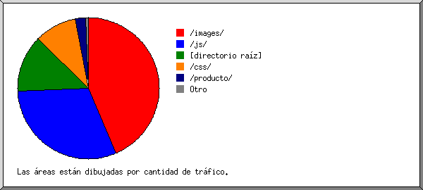
Listado de los directorios que representan, por lo menos, 0.01% del tráfico, ordenados por cantidad de tráfico.
| No. pet. | %bytes | directorio |
|---|---|---|
| 151 | 43.62% | /images/ |
| 64 | 30.64% | /js/ |
| 859 | 13.14% | [directorio raíz] |
| 54 | 9.66% | /css/ |
| 219 | 2.43% | /producto/ |
| 16 | 0.36% | /Producto/ |
| 7 | 0.06% | /password/ |
| 11 | 0.04% | /Libro/ |
| 8 | 0.04% | /libro/ |
| 13 | 0.01% | [no listados: 7 directorios] |
(Ir a: Arriba | Resumen general | Informe mensual | Resumen diario | Resumen horario | Informe de dominios | Informe de organización | Informe de remitentes redirecionados | Informe de errores de remitentes | Informe de sitios remitentes | Informe de navegadores | Resumen de navegadores | Informe de Sistemas Operativos | Informe de códigos de estado | Informe de tamaño de archivos | Informe de Tipos de Archivo | Informe de Directorios | Informe de peticiones)
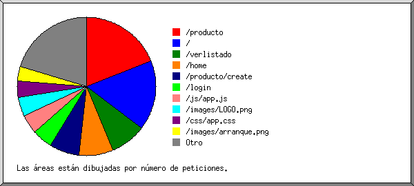
Listado de los archivos que representan, por lo menos, 20 peticiones, ordenados por número de peticiones.
| No. pet. | %bytes | última hora | archivo |
|---|---|---|---|
| 268 | 6.91% | 31/Jul/2019 1:49 pm | /producto |
| 17 | 0.45% | 31/Jul/2019 1:49 pm | /producto?page=2 |
| 14 | 0.35% | 31/Jul/2019 3:10 am | /producto?page=6 |
| 14 | 0.36% | 31/Jul/2019 3:10 am | /producto?page=5 |
| 12 | 0.32% | 31/Jul/2019 5:08 am | /producto?page=4 |
| 11 | 0.29% | 31/Jul/2019 3:10 am | /producto?page=3 |
| 227 | 1.42% | 1/Ago/2019 3:01 am | / |
| 118 | 2.77% | 31/Jul/2019 9:15 pm | /verlistado |
| 111 | 1.03% | 1/Ago/2019 3:02 am | /home |
| 98 | 0.86% | 31/Jul/2019 1:47 pm | /producto/create |
| 66 | 0.68% | 1/Ago/2019 3:01 am | /login |
| 64 | 30.64% | 1/Ago/2019 1:38 am | /js/app.js |
| 63 | 18.20% | 1/Ago/2019 1:38 am | /images/LOGO.png |
| 54 | 9.66% | 1/Ago/2019 1:38 am | /css/app.css |
| 47 | 22.81% | 1/Ago/2019 1:38 am | /images/arranque.png |
| 33 | 0.86% | 31/Jul/2019 9:14 pm | /producto/index |
| 27 | 1/Ago/2019 3:02 am | /favicon.ico | |
| 226 | 4.17% | 1/Ago/2019 8:52 am | [no listados: 91 archivos] |